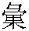

西谛先生：
四夜信收到。记得去年年底，生活书店曾将排好之校样一张送给我，问有无误字，即日为之改正二处，寄还了他。此即《十竹斋》广告，计算起来，该是来得及印上的，而竟无有，真不知何故。和商人交涉，常有此等事，有时是因为模模胡胡，有时却别有用意，而其意殊不可测（《译文》在同一书店所出的别种刊物上去登广告，亦常被抽去），只得听之，而另行延长豫约期间，或卖特价耳。
在同一版上，涂以各种颜色，我想是两种颜色接合之处，总不免有些混合的，因为两面俱湿，必至于交沁。倘若界限分明，那就恐怕还是印好几回，不过板却不妨只有一块，只是用笔分涂几回罢了。我有一张贵州的花纸（新年卖给人玩的），看它的设色法，乃是用纸版数块，各将应有某色之处镂空，压在纸上，再用某色在空处乱搽，数次而毕。又曾见E.Mun-ch[24]之两色木版，乃此版本可以挖成两块，分别涂色之后，拼起来再印的。大约所谓采色版画之印法，恐怕还不止这几种。
营植排挤，本是三根惟一之特长，我曾领教过两回，令人如穿湿布衫，虽不至于气绝，却浑身不舒服，所以避之惟恐不速。但他先前的历史，是排尽异己之后，特长无可施之处，即又以施之他们之同人，所以当他统一之时，亦即倒败之始。但现在既为月[25]光所照，则情形又当不同，大约当更绵长，更恶辣，而三根究非其族类，事成后也非藏则烹[26]的。此公在厦门趋奉校长[27]，颜膝可怜，迨异己去后，而校长又薄其为人，终于下安于位，殊可笑也。现在尚有若干明白学生，固然尚可小住，但与月孽争，学生是一定失败的，他们孜孜不倦，无所不为，我亦曾在北京领教过，觉得他们之凶悍阴险，远在三根先生之上。和此辈相处一两年，即能幸存，也还是有损无益的，因为所见所闻，决不会有有益身心之事，犹之专读《论语》或《人间世》一两年，而欲不变为废料，亦殊不可得也。但萌退志是可以不必的，我亦尚在看看人间世，不过总有一天，是终于要“一走了之”的，现在是这样的世界。
偶看明末野史，觉现在的士大夫和那时之相像，真令人不得不惊。年底做了一篇关于明末的随笔，去登《文学》（第一期），并无放肆之处，然而竟被删去了五分之四，只剩了一个头，我要求将这头在第二期登出，聊以示众而已。上海情形，发狂正不下于北平。青年好游戏，请游戏罢。其实中国何尝有真正的党徒，随风转舵，二十余年矣，可曾见有人为他的首领拚命？将来的狂热的扮别的伟人者，什九正是现在的扮Herr Hitler[28]的人。穆公木天[29]也反正了，他与另三人作一献上之报告，毁左翼惟恐不至，和先前之激昂慷慨，判若两人，但我深怕他有一天又会激烈起来，判我辈之印古董以重罪也。（穆公们之献文，是登在秘密刊物里的，不知怎的为日本人所得，译载在《支那研究资料》上了，遂使我们局外人亦得欣赏。他说：某翼中有两个太上皇，亦即傀儡，乃我与仲方。其实这种意见，他大约蓄之已久，不过不到时候，没有说出来。然则尚未显出原形之所谓“朋友”也者，岂不可怕？）
S君[30]是明白的。有几个外国人之爱中国，远胜于有些同胞自己，这真足叫人伤心。我们自己也还有好青年，但不知在此世界，究竟可以剩下几个？我正在译童话[31]，拟付《译文》，亦尚存希望于将来耳，呜呼！
专此布达，即请
著安。
迅 顿首 一月八夜。
注 释
[24] E.Munch 蒙克（1863—1944），挪威油画家和版画家。
[25] 指新月派。
[26] 非藏则烹 语出《史记·勾践世家》：“飞鸟尽，良弓藏；狡兔死，走狗烹。”
[27] 指厦门大学校长林文庆。
[28] Herr Hitler 德语：希特勒先生。
[29] 穆木天 参看340805信注〔2〕。下面所说的“献上之报告”及译载它的《支那研究资料》，指日本人在上海编辑出版的日文杂志《中国资料月报》第二卷第一号（1935年1月1日）刊载的《左翼作家联盟透视》，该刊编者在文前注明：此文由穆木天、卢森堡、汪绍、刘智民四人“以《左联

编》为题，发表在上海蓝衣社机关杂志《指南针》上”。鲁迅引述的话，见于该文的第六节。仲方，原文作茅盾。按穆木天生前否认写过这样的文章。[30] S君 指斯诺。
[31] 童话 指《表》。